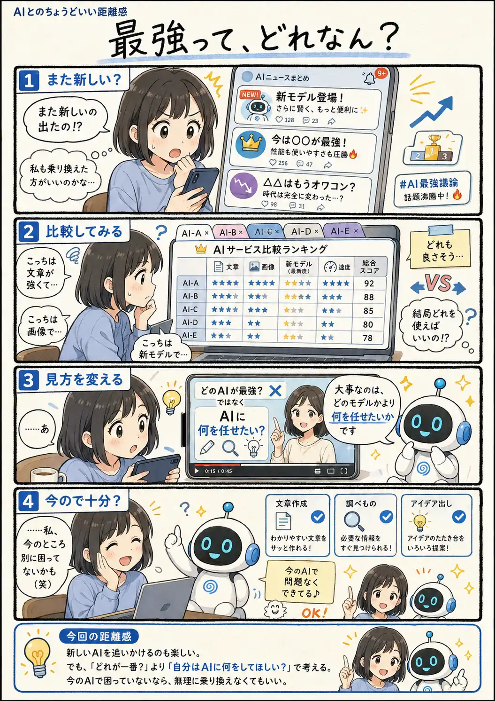

#107
最強って、どれなん？
また新しいの出たの!? 今のままじゃダメ？

メモ
AIの進歩が速いぶん、「これが最強」「次はこれ」といった情報も毎日のように流れてきます。性能を比べるのは面白いし、新しいものを試してみる楽しさもあります。
でも、ランキングの上位がそのまま自分にとって一番使いやすいとは限りません。文章を書く、調べものをする、画像を作るなど、やりたいことが今のAIで問題なくできているなら、それも十分な選択肢。乗り換える理由は、新モデルが出たことより、自分が何か困った時に考えても遅くないのかもしれません。
今回の距離感
新しいAIを追いかけるのも楽しい。でも、「どれが一番？」より「自分はAIに何をしてほしい？」で考える。今のAIで困っていないなら、無理に乗り換えなくてもいい。それくらいが、ちょうどいい。